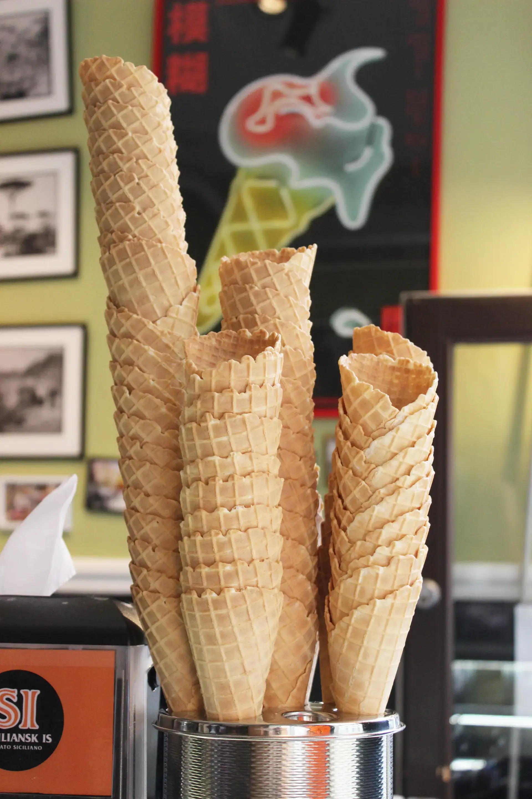
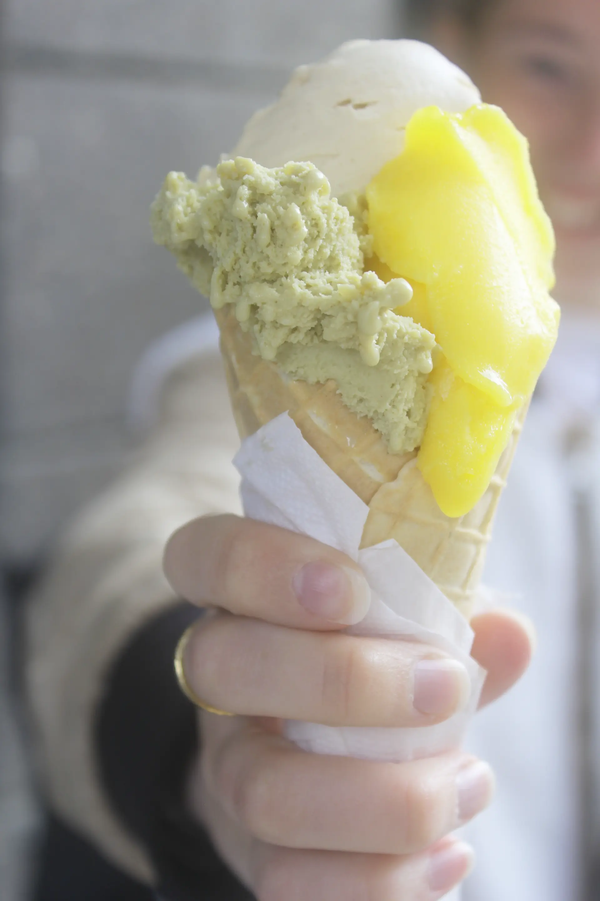

Forhandlere
Her kan du også købe Siciliansk Is

Forhandlere
CAFE SLUSEN for enden af slusen der forbinder Sjælland og
Amager.
Se deres facebook her
CORSA ØSTERBRO Østerbrogade 56.
corsapizza.dk
FASANGÅRDEN Frederiksberg Have.
fasangaarden.dk
MEYERS BAGERI på Classensgade, Østerbro.
meyers.dk
MEYERS DELI POP-UP isbutik på Gammel Kongevej 107,
Frederiksberg.
meyers.dk
MEYERS SPISEHUS i Lyngby.
meyersspisehus.dk
MUNKERUPHUS Munkerup Strandvej 78 i Dronningmølle.
munkeruphus.dk

